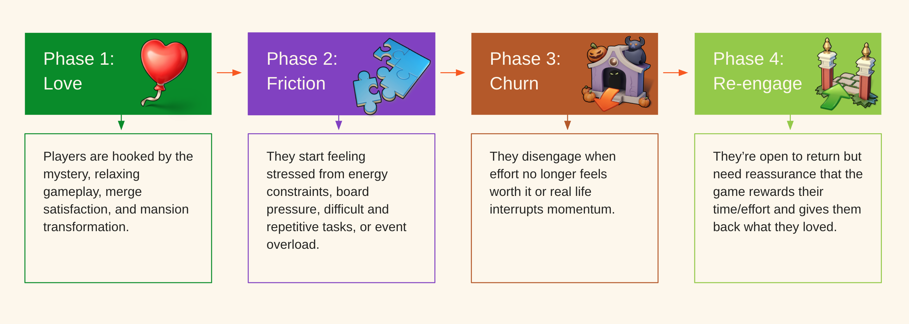

The challenge
DAU was down and churn was up. The team could see the drop without understanding it, which meant any fix would be a guess.
Case 03 · Metacore Games
Analytics flagged that Merge Mansion was losing players. But game data tells you what players do – not why. I set out to turn a behavioural signal into an explanation the team could act on.
DAU was down and churn was up. The team could see the drop without understanding it, which meant any fix would be a guess.
I triangulated three sources: game data, community and support feedback, and a churn diagnostic survey of lapsed players, then segmented the results by spend behaviour.
Reframed churn into a segmented, actionable picture, plus a reusable Love to Friction to Churn to Re-engagement lifecycle lens. The work became a talk on evidence as a craft, presented internally and externally.

I treat data as all the evidence that helps us understand players,
not just analytics.
The full story
Analytics flagged that Merge Mansion was losing players: DAU was down and churn was up. But game data tells you what players do, not why they do it. The team could see the drop without understanding it, which meant any fix would be a guess. I set out to turn a behavioural signal into an explanation the team could act on.
I treat data as all the evidence that helps us understand players not just analytics. Behavioural and attitudinal, quantitative and qualitative each answer different questions: quant for scale, measurement, and validation; qual for motivation, meaning, and exploration. The strongest insights come from triangulating across them rather than trusting any single source.
The churn problem was a good case to put that into practice, and I later used it as the worked example in a talk on how we should think about evidence as a craft, which I presented both internally and externally.
I triangulated across three sources. Game data located the problem (DAU down, churn up). For community feedback, I read player discussion on Reddit and Discord and went directly to the Community and Social Media managers, and I gathered support ticket themes from the PX managers, which surfaced the recurring frustrations players were already voicing. Then I ran a churn diagnostic survey of lapsed players to quantify the top reasons for leaving and capture the emotions behind them, pairing multi-select questions with qualitative thematic coding of open-text responses.
Each source covered a different blind spot: analytics had the magnitude, community and support had the texture, the survey had the structured why.
To make sense of the responses, I built a four-phase lens, Love → Friction → Churn → Re-engagement, that tracks players from what they loved, through the friction that set in, to why they left and what would bring them back. It turned a list of complaints into a journey the team could reason about.
Most churned players are paused, not lost: only a small share said nothing would bring them back, and the rest named specific, addressable triggers. Slow progression showed up across the whole journey: it's the top reason for leaving and the top motivator to return. What players loved (visual restoration, the mystery-driven story, events, the merge mechanic) turned out to be a mirror of what frustrated them, since the friction blocked the very things they came for.
The segmentation was the sharpest part. Spenders and non-spenders churn for different reasons and return for different reasons. Spenders leave over content, value, and fairness, and feel let down when spending doesn't convert to progress. Non-spenders leave more over friction and life circumstances, and a meaningful slice of their churn is simply life getting in the way, recoverable with well-timed nudges rather than design changes. A single win-back strategy would have missed both.
No one source would have been enough. Analytics alone would have told the team churn was rising and left them guessing at causes. The survey alone would have floated free of behavioural reality. Reading them together, with community and support feedback as the connective tissue, is what made the diagnosis trustworthy and specific.
The findings also corroborated patterns from other studies (progression, reward perception, event fatigue, the spend-satisfaction inversion), which is triangulation across the research body, not just within one study.
The work reframed churn from a number going the wrong way into a segmented, actionable picture: which reasons matter most, which players need which intervention, and what to prioritise for win-back. The Love → Friction → Churn → Re-engagement lens was designed to be reusable for lifecycle research rather than a one-off structure.
The triangulation talk built from this work was well received by the teams who saw it, both inside Metacore and externally, as a way of widening what we treat as evidence beyond analytics alone.